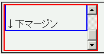
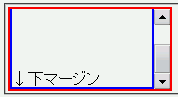

ある要素でoverflowプロパティにautoかscrollを指定してスクロールバーが表示されるとき、その中身の高さ計算が正しくない。最後のボックスの下ボーダーまでしか高さを確保せず、下マージンが消えてしまう。
<div style="width:10em; height:5em; overflow:auto; border:2px solid red;"> <div style="margin:2em 0; border:2px solid blue;"> ↑上マージン<br><br><br><br><br>↓下マージン </div> </div>
青色のボーダーのdiv要素の上下に2emのマージンを設定しています。
WinIE5.5での表示
Opera7.03での表示
Opera7.11ではOperaバグ053の影響で内側のボックスの下マージンが外側のボックスの下マージンとして表示されます。
Opera7.03標準モード、Opera7.03互換モードで不具合の発生を確認しました。